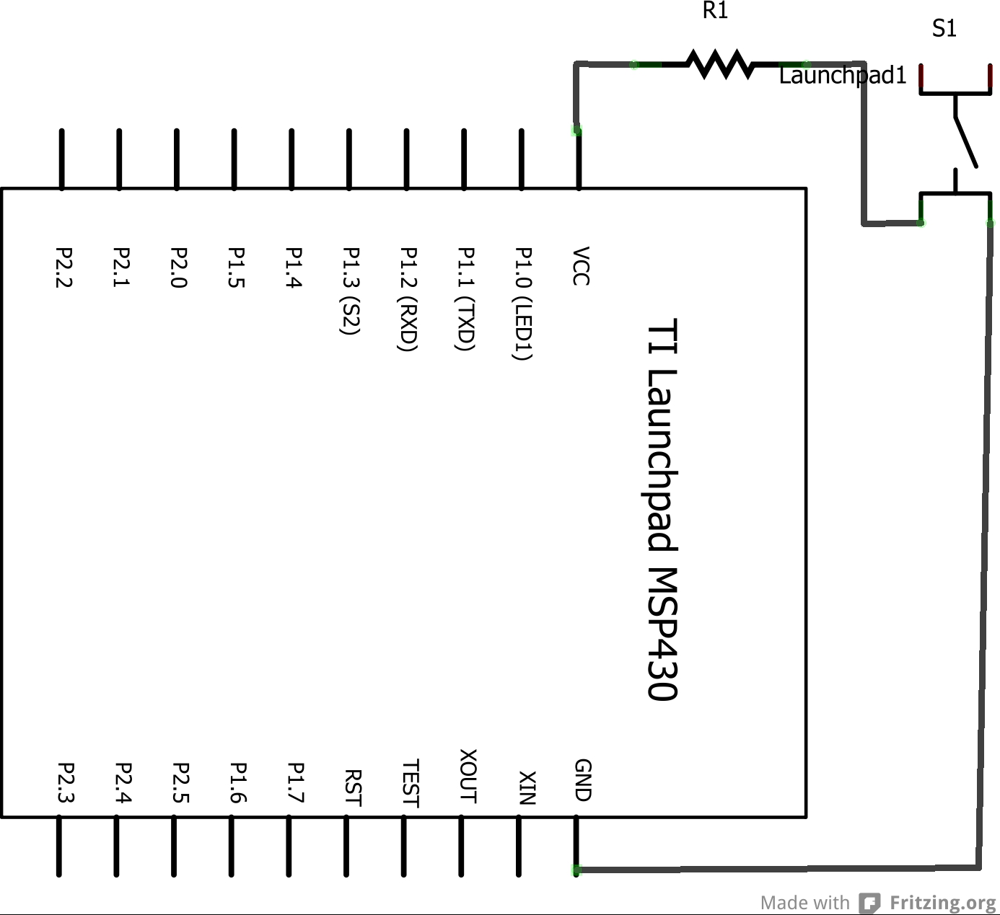

<!DOCTYPE html>
<html>
<head>
  <title>Energia Reference - Tutorials </title>
  <link rel="shortcut icon" type="image/x-icon" href="http://energia.nu/img/eicon.png">
  <link rel='stylesheet' href='energiaWideRender.css' 
type='text/css' />
    <!--HeaderText--><style type='text/css'></style>  
  <meta name='robots' content='index,follow' />
  <meta name="Author" content="Robert Wessels" />
  <meta name="Publisher" content="Energia" />
  <meta name="Keywords" content="Energia, Wiring, Processing, Maker, LaunchPad, Arduino, Texas Instruments, Sketch, MSP430, mspgcc, mpsdebug, Electronic Arts, Programming, C, C++, Robert Wessels" />
  <meta name="Description" content="Energia is a rapid prototyping platform for the Texas Instruments MCU Launchpad. Energia is based on Wiring and Arduino and uses the Processing IDE." />
  <meta name="Copyright" content="All contents copyright Robert Wessels" />

</head>
<body>
<div id="page">
  <!--PageHeaderFmt-->
  <div id="pageheader">
    <div class="title"><a href='http://energia.nu'>Energia</a></div>
  </div>
  <!--/PageHeaderFmt-->

  <!--PageLeftFmt-->
  <div id="pagenav">
    <div id="navbar">
  	<p><a class='wikilink' href='http://energia.nu/'>Home</a>
<a class='wikilink' href='http://energia.nu/download'>Download</a>
<a class='wikilink' href='Guide_index.html'>Getting Started</a>
<a class='wikilink' href='index.html'>Reference</a>
<a class="wikilink" href="http://energia.nu/help.html">Getting Help</a>
<a class="nav" href="http://energia.nu/faq.html">FAQ</a>
<a class="wikilink" href="http://energia.nu/projects.html">Projects Using Energia</a>
<a class="nav" href="http://energia.nu/contact.html">Contact Us</a>
</p>


<p class='vspace'></p>

    </div>
  </div>
  <!--/PageLeftFmt-->

  <div id="pagetext">
  <!--PageText-->
<div id='wikitext'>
<p><em>Examples &gt; Digital</em>
</p>
<p class='vspace'></p><h3>Button</h3>
<p>This program shows how to blink an LED on the LaunchPad by switching the pushbutton.
</p>
<p class='vspace'></p><div  class='BOM' >
<h3>Hardware Required</h3>
<ul><li>MSP-EXP430G2 LaunchPad
</li><li>pushbutton [available already on-board as part of the LaunchPad]
</li><li>LED [available already on-board as a part of the Launchpad]
</li><li>momentary button or switch
</li><li>10K ohm resistor
</li><li>breadboard
</li><li>hook-up wire
</li></ul><p class='vspace'></p></div>
<h3>Relevant Groundwork</h3>
<p class='vspace'></p><p>Pushbuttons or switches connect two points in a circuit when you press them. For on-board pushbuttons, the pushbuttons ( Pin 1.3)  are connected Vcc through PULL-UP resistors. So, when the pushbutton is open (unpressed) there is no connection between the two legs of the pushbutton, so the pin is connected to Vcc(through the pull-up resistor) and reads as HIGH, or 1. When the button is closed (pressed), it makes a connection between its two legs, connecting the pin to ground, so the  pin reads as LOW, or 0.
</p>
<p>External pushbuttons can be connected either through PULL-UP or PULL-DOWN resistors to any Digital I/0 pins. 
</p>
<p class='vspace'></p><h3>Circuit</h3>
<div  class='circuit' >
<div></div>
<p class='vspace'></p><p><span style='font-size:83%'>image developed using <a class='urllink' href='http://www.fritzing.org' rel='nofollow'>Fritzing</a>. For more circuit examples, see the <a class='urllink' href='http://fritzing.org/projects/' rel='nofollow'>Fritzing project page</a> </span>
</p><p class='vspace'></p></div>
<u>For on-board push button</u>
<p>No external circuitry is required. 
</p>
<u>For external push button</u>
<p>Connect three wires to the Launch pad board. The first two, red and black, connect to the two long vertical rows on the side of the breadboard to provide access to the 3 volt supply and ground. The third wire goes from digital pin p1.3 to one leg of the pushbutton. That same leg of the button connects through a pull-up resistor (here 10 K Ohms) to Vcc. The other leg of the button connects to the ground.
</p>
<p class='vspace'></p><h3>Schematic</h3>
<div  class='circuit' >
<div></div>
</div>
<p class='vspace'></p><h3>Code Explanation</h3>
<p>In the program, pin 14, which has green LED connected to it, is set up as output in the setup function. 
</p>
<code>pinMode(ledPin, OUTPUT);</code>
<p class='vspace'></p>
<p>Here the ledpin refers to the GREEN_LED which is set as output. The push button which is connected to pin 5 is set up as input. The pull-up resistor connected to this pin is enabled.
</p>
<code>pinMode(buttonPin, INPUT_PULLUP);</code>
<p class='vspace'></p>
<p>In the main loop, the state of the push button is read to check if it is pressed or not. The state of the pushbutton is read into variable buttonState.
</p>
<code>buttonState = digitalRead(buttonPin);</code>
<p class='vspace'></p>
<p>If the buttonState is HIGH, it means that push button was pressed else it is not. Whenever the button state is HIGH, the Green LED is accordingly switched ON else it is switched OFF.
</p>
<p class='vspace'></p><h3>Code</h3>
<pre>
/* Turns on and off a light emitting diode(LED) connected to digital pin 14, 
   when pressing a pushbutton attached to pin 2. 
  The circuit:
  * LED attached from pin 14 to ground 
  * pushbutton attached to pin 5 from ~3V
  * 10K resistor attached to pin 5 from ground

  created 2005
  by DojoDave <http://www.0j0.org>
  modified 30 Aug 2011
  by Tom Igoe
  modified Apr 27 2012
  by Robert Wessels
*/

const int buttonPin = PUSH2;     // the number of the pushbutton pin
const int ledPin =  GREEN_LED;      // the number of the LED pin
int buttonState = 0;         // variable for reading the pushbutton status
void setup() {
  // initialize the LED pin as an output:
  pinMode(ledPin, OUTPUT);      
  // initialize the pushbutton pin as an input:
  pinMode(buttonPin, INPUT_PULLUP);     
}
void loop( )
{
  // read the state of the pushbutton value:
  buttonState = digitalRead(buttonPin);
  // check if the pushbutton is pressed.
  // if it is, the button State is HIGH:
  if (buttonState == HIGH) 
  {     
    // turn LED on:    
    digitalWrite(ledPin, HIGH);  
  } 
  else {
    // turn LED off:
    digitalWrite(ledPin, LOW); 
  }
}

</pre>
<h3>Working Video</h3>
(Insert Video Here)
<h3>Try it out:</h3>
<p>- use the button to print something in binary to the serial monitor
</p>
<p class='vspace'></p><h3>See Also:</h3>
<ul><li><a class='wikilink' href='PinMode.html'>pinMode</a>()
</li><li><a class='wikilink' href='DigitalWrite.html'>digitalWrite</a>()
</li><li><a class='wikilink' href='DigitalRead.html'>digialRead</a>()
</li><li><a class='wikilink' href='If.html'>if</a>()
</li><li><a class='wikilink' href='Else.html'>else</a>()
</li><li><a class='wikilink' href='Tutorial_BareMinimum.html'>BareMinimum</a>: The bare minimum of code needed to start an Energia sketch.
</li><li><a class='wikilink' href='Tutorial_Blink.html'>Blink</a>: Turn an LED on and off.
</li><li><a class='wikilink' href='Tutorial_DigitalReadSerial.html'>DigitalReadSerial</a>: Read a switch, print the state out to the Energia Serial Monitor.
</li><li><a class='wikilink' href='Tutorial_Debounce.html'>Debounce</a>: Read a pushbutton filtering noise.
</li><li><a class='wikilink' href='Tutorial_ButtonStateChange.html'>Button State Change</a>: Counting the number of button pushes.
</li></ul>
<p class='vspace'></p><p><a class='wikilink' href='Guide_index.html'>Getting Started Home</a>
</p>
<p class='vspace'></p><p><em>Corrections, suggestions, and new documentation should be posted to the <a class='urllink' href='http://forum.43oh.com/forum/28-energia/' rel='nofollow'>Forum</a>.</em>
</p>
<p class='vspace'></p><p>The text of the Energia reference is licensed under a
<a class='urllink' href='http://creativecommons.org/licenses/by-sa/3.0/' rel='nofollow'>Creative Commons Attribution-ShareAlike 3.0 License</a>.  Energia reference is based on the Arduino reference. Code samples in the reference are released into the public domain.
</p>
</div>


  </div>

  <!--PageFooterFmt-->
  <div id="pagefooter">
&copy;Energia | 
  <a href='#'>Edit Page</a> | <a href='#'>Page History</a> | <a href=#' target='_blank'>Printable View</a> | <a href='#'>All Recent Site Changes</a>
  </div>
  <!--/PageFooterFmt-->

</div>
</body>
</html>
